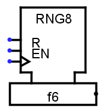
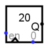
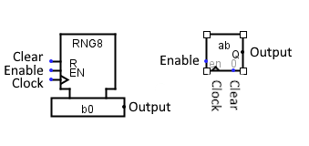

Random
Random
| Librairie : | Memory |  |
| Introduction : | 2.3.0 | |
| Apparence : |  | |
| Logisim-clasique |
Logisim-Evolution Logisim-HolyCross |
Comportement
Ce composant itère à travers une séquence pseudo-aléatoire de nombres, qui avance au nombre suivant de la séquence chaque fois que l'horloge est déclenchée alors que le composant est activé. Techniquement parlant, l'algorithme utilisé pour calculer la séquence pseudo-aléatoire est un générateur congruentiel linéaire : À partir d'une graine r0, le nombre suivant r1 est le nombre
La valeur suivante r2 est calculée à partir de r1 en utilisant le même calcul, et ainsi de suite. Cette séquence est composée de nombres de 48 bits. La valeur vue par le composant est celle des bits de poids faible, telle que configurée par l'attribut Largeur de donnée après avoir rejeté les 12 bits inférieurs de la graine actuelle.
Outre l'entrée d'horloge, le composant comprend également une entrée d'activation enable, qui conduit l'entrée d'horloge à être ignorée lorsque l'activation est à 0, et l'entrée de réinitialisation reset, qui réinitialise la valeur du composant de manière asynchrone à la graine initiale r0.
La graine initiale est configurable par l'utilisateur. Si elle est configurée à 0 (ce qui est la valeur par défaut), la graine est basée sur l'heure actuelle ; lorsqu'on lui demande de se réinitialiser par l'entrée de reset, le composant calcule une nouvelle graine basée sur la nouvelle heure actuelle.
Broches
L'attribut Apparence permet deux différents affichages pour ce composant. Logisim evolution présente les entrées à l'ouest et les sorties à l'est, je présente les pins du haut en bas et de l'ouest à l'est.
- Entrée Clear: étiquette R
- Lorsque cette valeur est égale à 1, la séquence pseudo-aléatoire est réinitialisée de manière asynchrone sur la graine initiale. Si la graine vaut 0 la sortie sera initialisée chaque fois différemment, car dépendante de l'heure, Si elle est à 1 la sortie sera initialisée sur le premier nombre de la série. Largeur de bit 1.
- Entrée Enable : étiquette EM
- Le composant est activé lorsque cette entrée est à 1 ou indéfini U, mais si elle est à 0, l'entrée d'horloge est ignorée. Largeur de bit 1.
- Entrée Clock : étiqueté avec un triangle.
- Au moment où cette action est déclenchée comme spécifié par l'attribut Trigger, le composant passe au numéro suivant dans sa séquence. Largeur de bit 1.
- Sortie Output :
- Émets la valeur actuellement stockée par le composant.
Attributs
Lorsque le composant est sélectionné ou en cours d'ajout, Alt-0 through Alt-9 modifient son attribut Largeur de données.
- Largeur de donnée
- La largeur de donnée en bit de la valeur émise par le composant.
- Graine
- Valeur de départ utilisée pour la séquence pseudo-aléatoire. Si cette valeur est 0 (valeur par défaut), la valeur de départ est basée sur l'heure à laquelle la séquence aléatoire a commencé.
- Trigger
-
Configure la façon dont l'entrée d'horloge est interprétée. Les valeurs :
Front montant indique que le composant doit mettre à jour sa valeur à l'instant où l'horloge passe de 0 à 1.
Front descendant indique qu'il doit mettre à jour sa valeur à l'instant où l'horloge passe de 1 à 0. - Etiquette
- Le texte de l'étiquette associée au composant.
- Police des étiquettes
- La police de caractères avec laquelle l'étiquette doit être affichée.
Comportement de l'outil pousser
Aucun.
Comportement de l'outil text
Permets de modifier l'étiquette associée au composant.
Retour à Référence de la bibliothèque